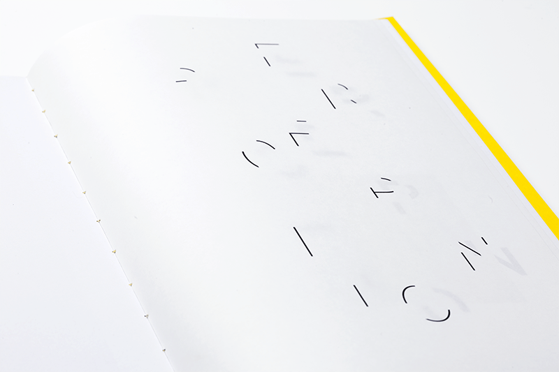
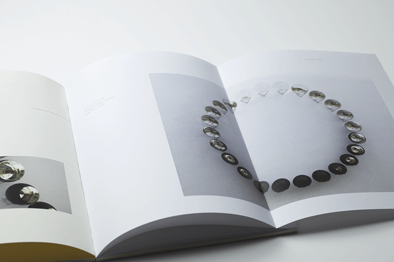
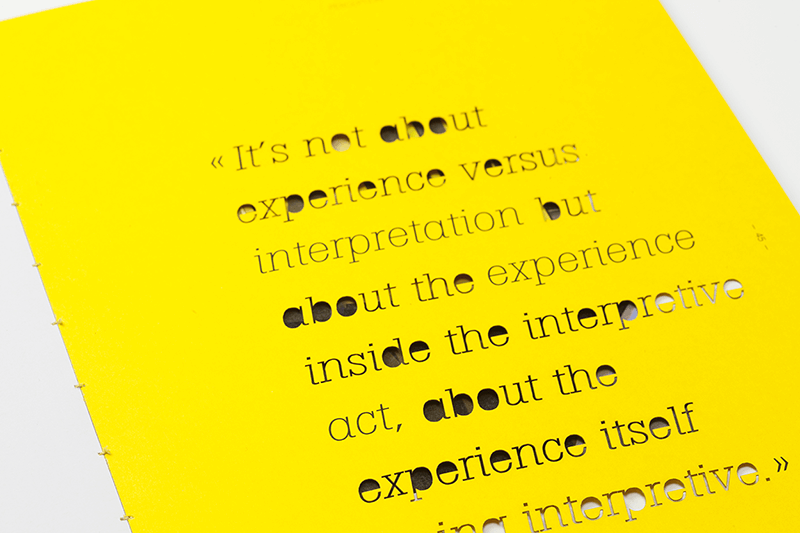
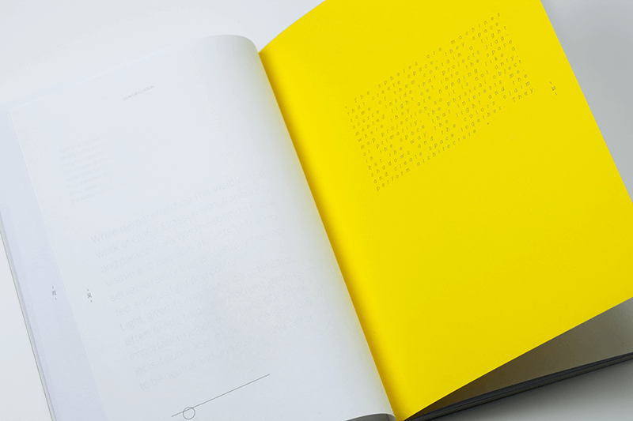
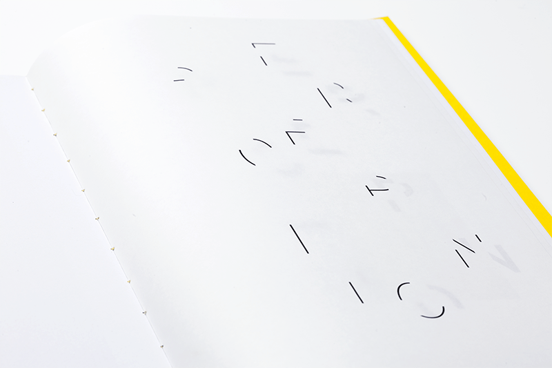
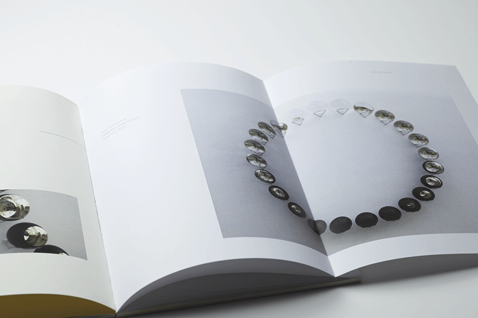
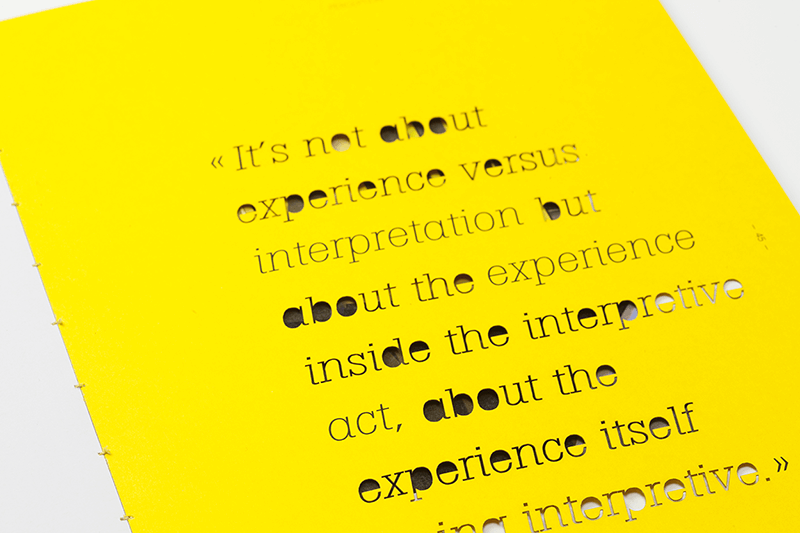
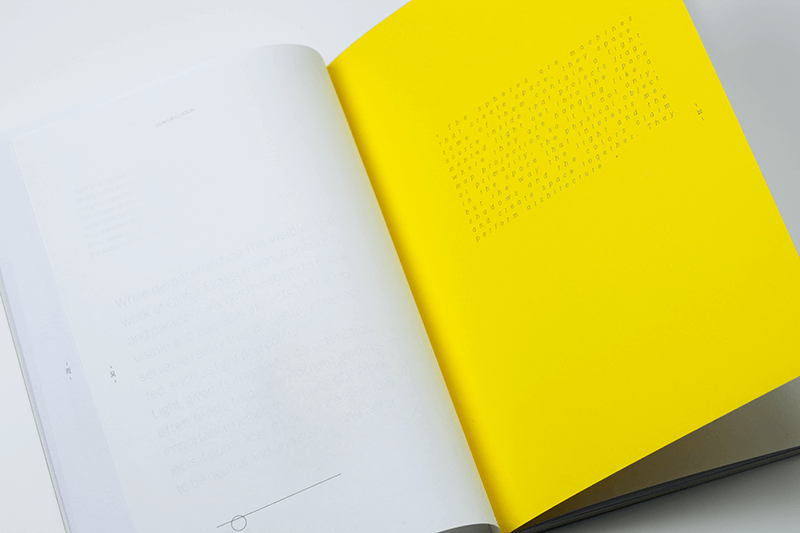

OLAFUR ELIASSON
-
Ce projet propose d’interpeller l’attention du lecteur, à travers une information insaisissable, illisible ou difficile à décoder. Création d’une collection de livres d’artistes contemporains se matérialisant sous la forme de «Beau livre». Le livre permet de se plonger dans l’univers sensoriel de l’artiste facilitant ainsi la compréhension des œuvres d’art contemporain.
Olafur Eliasson est un artiste qui exploite principalement des thèmes tels que la perception dans l’espace et le rapport au corps. La composition du livre est aérée rytmée de pages transparentes. La couleur jaune symbolisant le soleil pour l’artiste est omniprésente.
Papier cocoon offset blanc 120g, élementa opaque 45g, image recycled regular white 80g, canson jaune 240g, impression sérigraphie blanche, découpe laser, reliure dos carré collé à la main.